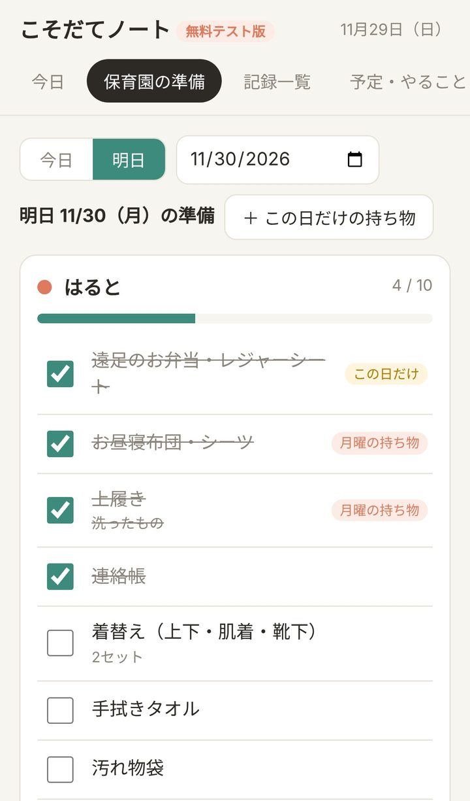
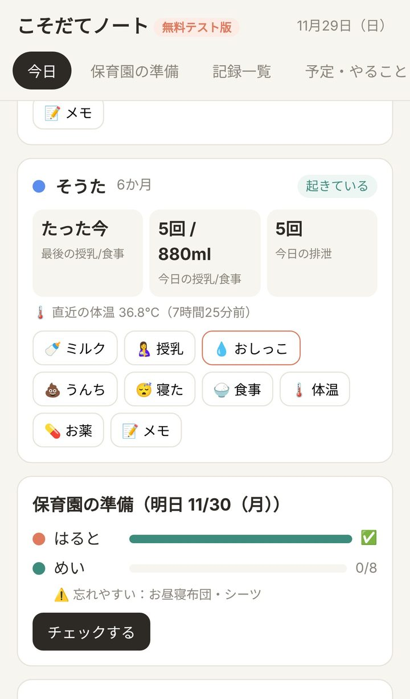
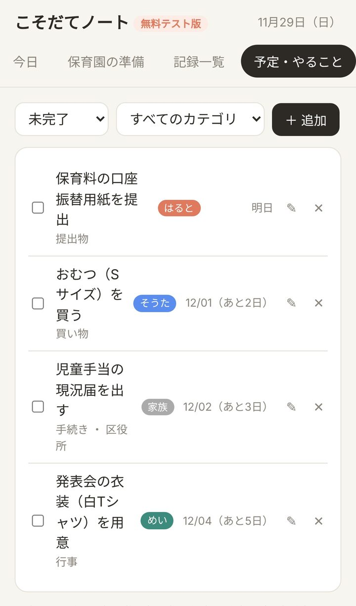
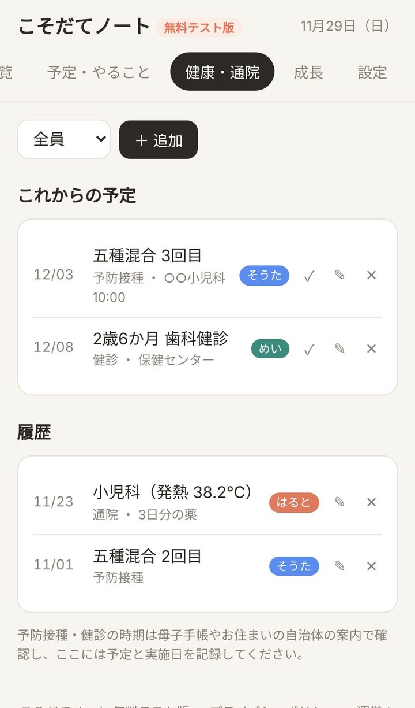
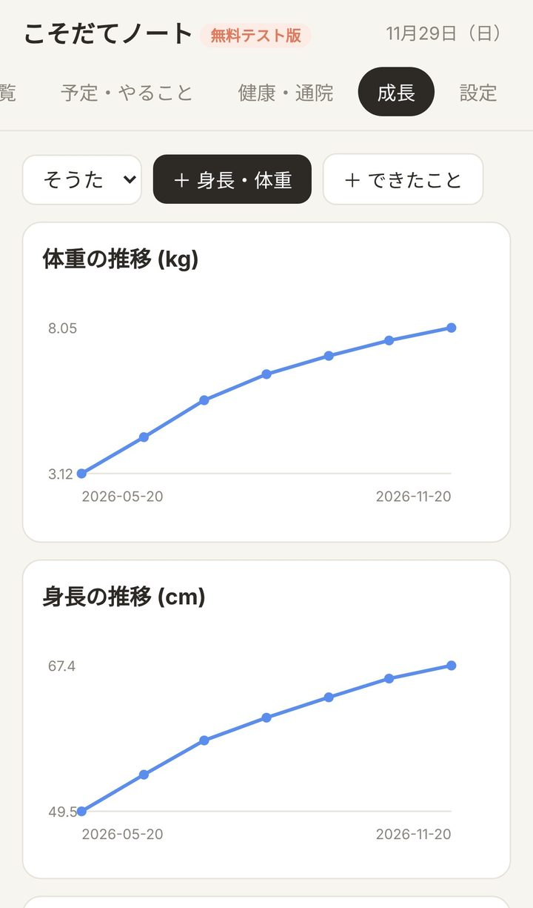

きょうだい育児の、毎日のこまりごとに
保育園の準備、もう忘れない。
前の晩に持ち物をチェックするだけで、月曜の布団も、遠足のお弁当も見落としません。授乳・睡眠・体温の記録、予防接種や提出物の予定、身長・体重のグラフまで、きょうだい全員分をひとつのアプリに。
- 無料テスト版
- 登録なし
- インストールなし
- データは端末の中だけ
iPhone・Android・パソコンのブラウザで、すぐに使えます。

「この日だけ」「月曜の持ち物」は
リストの上に出るから、見落とさない
こんなこと、ありませんか？
「前の晩に準備したのに、
朝になって布団を忘れていた」
毎日の物と、曜日によって違う物と、その日だけの物。頭の中だけで覚えておくのは大変です。
保育園の準備チェック「上の子の記録は手帳、
下の子はスマホのメモ…」
きょうだいが増えるほど、記録の置き場所はばらばらに。「最後のミルク、何時だっけ？」がすぐわかりません。
ワンタップ記録「予防接種の日と、
保育園の提出物の締め切り」
子どもの予定・手続き・行事の準備は、家族ごとに山のように。期限が近い順に並べて、ひと目で見たい。
予定・やることこそだてノートで、できること
子育て中の運営者が、自分の家で毎日使うために作りました。いちばん困っていた「忘れ物」から順に、機能を足しています。
01 保育園の準備チェック
持ち物リストを一度つくれば、
あとはチェックするだけ。
子どもごとに持ち物を登録しておくと、「明日」の準備リストが自動でできあがります。チェックは日付ごとに保存されるので、次の日にはまた未チェックに戻ります。
- 「毎日」「月曜だけ」など、曜日ごとに持ち物を設定
- 遠足のお弁当など「この日だけ」の物も追加できる
- 曜日限定・この日だけの物はリストの上に出て、見落としにくい
- 「今日」の画面に、きょうだい全員の準備の進み具合と「忘れやすい物」を表示

02 ワンタップ記録
ミルクもおしっこも、
ボタンひとつで記録。
呼び名と誕生日を登録すると、月齢に合わせた記録ボタンが並びます。「最後の授乳から何時間たったか」「今日は何回・何ml飲んだか」が、ひと目でわかります。
- ミルク・授乳・おしっこ・うんち・寝た／起きた・食事・体温・お薬・メモ
- 今日のタイムラインで、家族の一日をまとめて振り返り
- 記録一覧で、過去の日の記録もさかのぼれる

予定・やること
提出物、手続き、行事の準備、買い物。子どもごと・カテゴリごとに、期限の近い順で並びます。

健康・通院
予防接種・健診の予定と、通院の履歴を記録。「前に熱を出したのはいつ？」もすぐ見返せます。

成長グラフと思い出
身長・体重をグラフで。「はじめての寝返り」など、できたことも日付つきで残せます。
子どもの記録だから、安心して使えるように
お子さんの名前や記録は、運営者のサーバーには送られません。
データは端末の中だけ
入力した内容は、お使いのスマホのブラウザの中だけに保存されます。運営者が見ることはできません。
登録・ログインなし
メールアドレスもパスワードもいりません。開いたらすぐに使い始められます。
バックアップも自分の手で
設定画面からデータをファイルに書き出して、機種変更のときに読み込めます。2週間ごとにお知らせも出ます。
アプリの改善のため、Google アナリティクスで匿名の利用状況（画面を開いた回数など）を計測しています。入力内容は送らず、設定画面からいつでもオフにできます。詳しくはプライバシーポリシーをご覧ください。
はじめかた
ダウンロードはいりません。3ステップで、今夜の準備から使えます。
アプリを開く
スマホで kosodate-note.pages.dev を開きます。
ホーム画面に追加
アイコンから開けるようになり、アプリのように使えます。データも消えにくくなります。
お子さんを登録
呼び名と誕生日を入れて、保育園の持ち物を登録したら準備完了です。
Android：Chromeで開き、右上の︙ →「ホーム画面に追加」または「アプリをインストール」
よくある質問
本当に無料ですか？
はい。いまは無料のテスト版として公開しています。広告も入っていません。
「正式版は有料予定」とはどういうことですか？
正式版は、iPhoneアプリ（無料のお試し期間つきの有料版）として準備しています。料金や時期はまだ決まっていません。決まったら、お知らせ登録をしてくださった方に最初にご案内します。テスト版で入力したデータは、正式版に引き継げるようにする予定です。
夫婦や家族で、同じデータを見られますか？
いまのテスト版はデータを端末の中だけに保存しているため、家族での共有はできません。共有は正式版で対応する予定です。
データが消えてしまうことはありますか？
ブラウザのデータを消したときや、端末の故障・機種変更のときに消えることがあります。設定画面の「バックアップを書き出す」で、ときどき保存しておいてください。また、iPhoneではSafariのまま使うよりも、ホーム画面に追加したアイコンから使うのがおすすめです（Safariとホーム画面のアプリでは、データの保存場所が別になります）。
何人きょうだいまで使えますか？
人数に決まりはありません。子どもごとに色分けされて、記録・持ち物・予定をまとめて管理できます。
体温などの記録を、病気の判断に使えますか？
こそだてノートは記録と管理を手伝うためのアプリで、医療上の判断には使えません。お子さんの体調が心配なときは、医療機関にご相談ください。